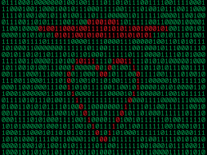

Любимые цитаты
Неудача - это просто возможность начать снова, но уже более мудро.- Генри Форд.
Лучшее время, чтобы посадить дерево, было двадцать лет назад. Следующее лучшее время — сегодня.
Коротко обо мне
Слушаю музыку по 4 часа в день
Занимаюсь дзюдо 9 лет
Увлечения
Спорт
Программирование
Конструирование
Текущие проекты
Веб-программирование
Дневник разработчика